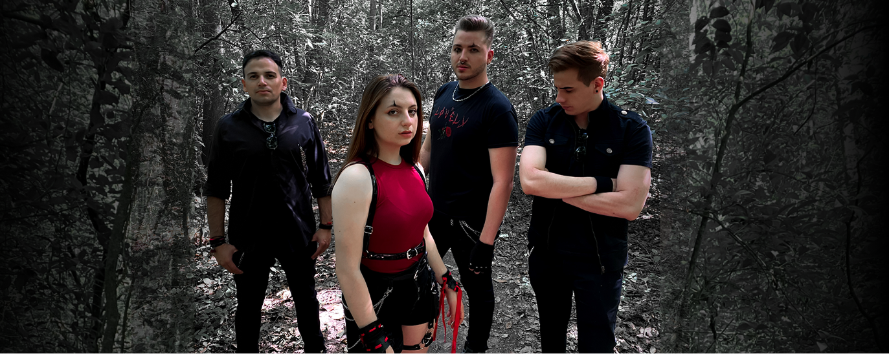

Sobre nosotros
Miembros de la banda
Nuestra historia
ETER es una banda de rock argentino independiente originaria de Buenos Aires, fundada en 2023 por Leonel Díaz y Camila Cuenca.
La propuesta fusiona el rock alternativo con sonidos góticos, orquestales y cinematográficos, dando lugar a una identidad musical profunda, emocional y visualmente potente.
Con un dúo vocal expresivo y contrastante, ETER construye paisajes sonoros oscuros, melódicos y envolventes.
La banda encuentra inspiración en artistas como Evanescence, Linkin Park, My Chemical Romance y otras bandas del estilo.
Sus letras abordan temáticas como la ansiedad, los ataques de pánico, la violencia de género y la depresión.
A finales de 2023 lanzaron el single "Dejarte Ir", seguido por "Pesadilla" en 2024, ambos con videoclips disponibles en YouTube y todas las plataformas digitales.
Actualmente se encuentran trabajando en su primer EP de estudio, que continúa expandiendo su universo sonoro y estético.